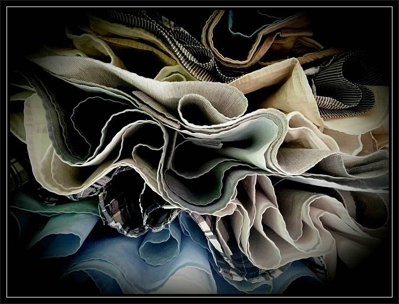

Jak pracuję?
Podczas pracy terapeutycznej koncentruję się nad zmianami w określonych, wybranych sferach życia wykorzystując zasady podejścia skoncentrowanego na rozwiązaniach.
"Są dwie drogi, aby przeżyć życie.
Jedna to żyć tak, jakby nic nie było cudem.
Druga to żyć tak, jakby cudem było wszystko."
Jeśli się spotykamy w tym miejscu, może to oznaczać, że potrzebujecie zmian, dążycie do nich. Na czym mogą one polegać? Czym mogą być? Zazwyczaj ich wprowadzanie łączy się z poszukiwaniem inspiracji, sposobów, narzędzi do ich implementowania. Niejednokrotnie pociąga to za sobą metaforyczne wypłynięcie z portu życia, w którym cumowaliśmy.
Zmiana: inność, nowość, nadzieja, energia. To wszystko wyznacza kierunek, jest drogowskazem związanych z tym działań. Dzięki temu wzmocnione zostaje poczucie sprawstwa, własnej wartości, skuteczności, komfort i jakość życia.
Proponuję Państwu spotkania – w ramach których oferuję przestrzeń na rozmowę, a także wsparcie, refleksję, przypatrzenie się sobie, otaczającemu światu, a może nabraniu potrzebnego dystansu. Rozmawiając tworzymy kontekst, budujemy wizję zmian oraz planujemy preferowaną przyszłość. Taka inwestycja może stać się inspiracją do dokonania wyborów, a następnie podjęcia działań. Efektem może być wprowadzanie tego, co najbardziej istotne – życiowych zmian.
Uważam, że jedynym, stałym elementem życia są… zmiany. Gdy patrzę na Klientki i Klientów, dostrzegam, że takie zmiany są możliwe. Każdy z nas dokonuje ich wiele, choć nie zawsze je zauważa!
Podjęcie wyzwania jakim jest terapia może być szansą na to, by zdobyć to, do czego Państwo dążycie, czego pragniecie. W tym miejscu pragnę zachęcić do otwartości i… zaproszenia opisywanych wcześniej, a upragnionych zmian do Waszego życia. Jestem gotów towarzyszyć Państwu w tym procesie.
Podczas pracy terapeutycznej koncentruję się nad zmianami w określonych, wybranych sferach życia wykorzystując zasady podejścia skoncentrowanego na rozwiązaniach.
Oferuję pomoc psychologiczną m.in. w przypadku wypalenia zawodowego, uzależnień, współuzależnień, DDA, DDD. Wspieram klientów potrzebujących interwencji kryzysowej. Pracuję również z osobami wysoko wrażliwymi czy z osobami doświadczającymi dysfunkcji URNŻ.
Tu dzielę się moim doświadczeniem zawodowym, oraz przebytymi szkoleniami. W tej sekcji znajdziesz również otrzymane przeze mnie referencje.